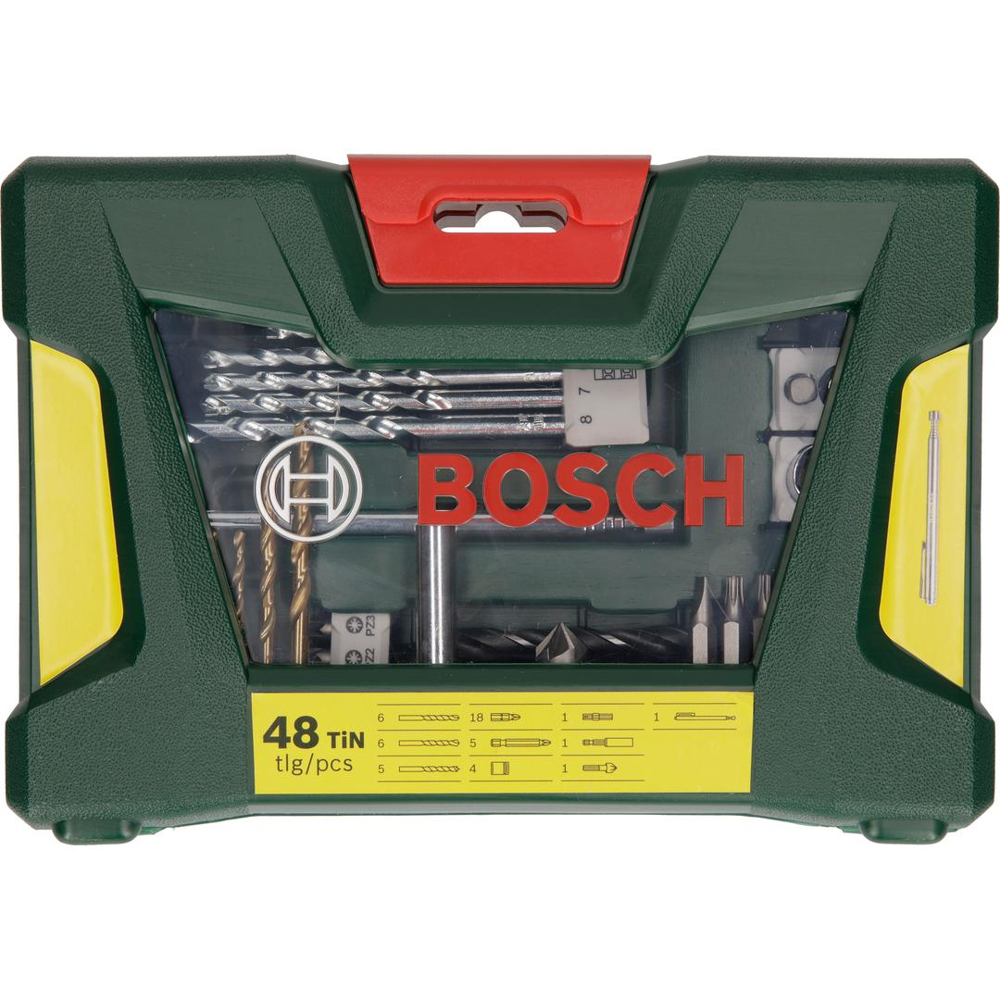
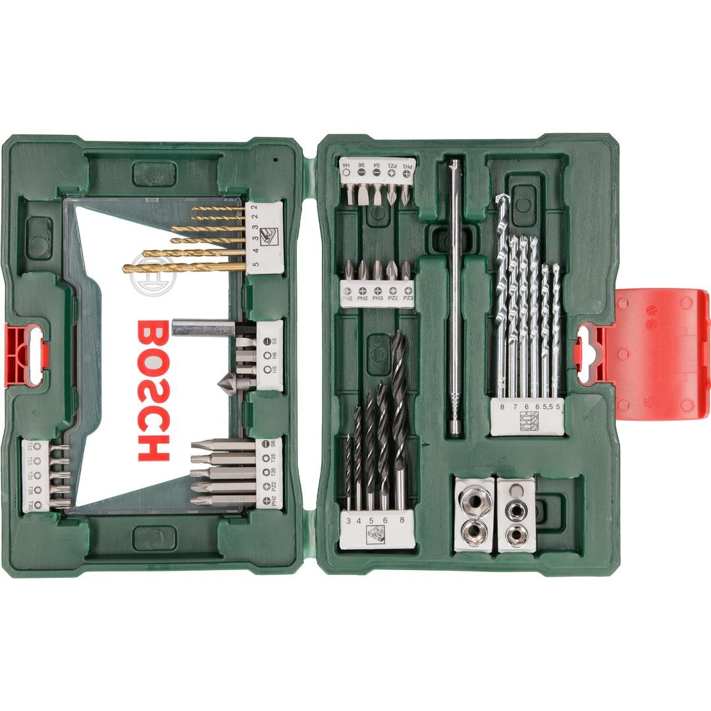

2607017314


| Contents |
1 magnetic stick
6 HSS-TiN metal drill bits, Ø 2-5 mm
6 masonry drill bits, Ø 5-8 mm
5 wood drill bits, Ø 3-8 mm
5 screwdriver bits, L=50 mm
PH 2
PZ 2
S 6
T 20
T 25
18 screwdriver bits, L=25 mm
PH 1/2/2/3
PZ 1/2/3
S 4/5/6
T 10/15/20/25/30
H 4/5/6
4 nutsetters, Ø 6/8/10/13 mm
1 universal holder, magnetic
1 countersink |
| Packaging |
Plastic case with printed card |
| Dimensions (lxwxh) |
235 x 60 x 162 mm |
| Weight |
0.858 kg |
| Pack quantity |
48 Pcs |
| Minimum order quantity |
1 Pcs |
DIY with Bosch quality: Drilling and screwdriving made easy.